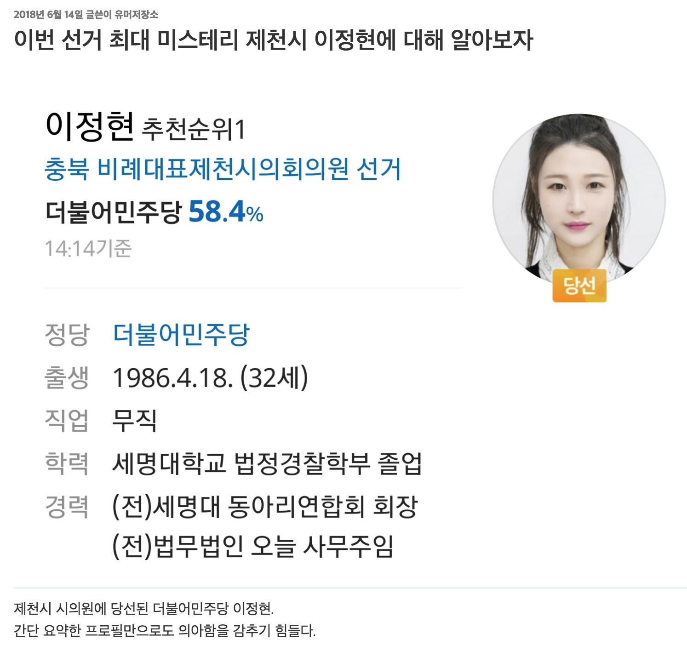

기초의원 비례대표, 여성이라서 당선됐다?
지난 6.13 지방선거 후, 충북 제천시의회 이정현 기초의원에 대한 비판이 온라인 커뮤니티에서 제기되었다. 학력과 경력이 부족함에도 여성이라는 점 하나로 더불어민주당 추천순위 1번으로 비례대표 의원이 되었다는 것이 그 이유였다. 이에 대해서 뉴스톱은 이러한 자격논란이 타당한 지 팩트체크했다. 해당 글은 팩트체크에 사용된 근거 및 주장을 인터랙티브 자료로 다시 확인해보고, 몇 가지 사항을 추가적으로 검토했다.
검토하기에 앞서, 먼저 제도에 대해 간단하게 살펴보자. 해당 사건에서 논란이 된 것은 기초의원 비례대표였다. 기초의원은 기초단체인 시·군·구의 중요 사항을 결정하는 최고의결기관인 기초의회의 의원들이다. 예를 들어, 관악구의원, 김포시의원, 함평군의원이 그들이다. 시·군·구 주민들을 대표하는 사람들로서, 선거를 통해 선출된다. 구체적으로 유권자들이 후보를 직접 뽑는 지역구 의원과 정당 득표율에 따라 구성되는 비례대표 의원이 있다. 비례대표는 지역구보다 전문적이고 참신한 정치신인들이 진출하기 쉬우며, 군소정당 의원들과 소수자들의 목소리도 담을 수 있다는 점에서 대표성이 높다.
한편 우리나라는 여성의 의원진출을 돕기 위해, 공직선거법에 의해 정당이 비례대표 자치구·시·군 의원의 선거에서 여성후보를 50% 의무적으로 추천하고, 위반 시 선거관리위원회가 등록을 무효화하도록 하였다. 이때 후보자 명부 순위의 매 홀수마다 여성을 추천하여야 한다는 의무사항을 규정하고 있다. 즉 비례대표 후보자 명부 1번은 항상 여성일 수밖에 없다. 그런데 이러한 1번으로 나왔던 여성후보가 기초의원 자격과 맞지 않다는 것이 해당 글에서 문제로 제기된 것이다.

FactCheck. 제 7회 전국동시지방선거(2018) 분석을 통한 팩트체크
■ 기초의원 비례대표 당선자는 모두 여성으로 남성이 진출 못하는 유리천장이다?
해당 게시글에는 이번 기초의원 비례대표 당선자는 모두 여성으로 남성이 진출 못하는 유리천장이라는 말이 있었다. 실제 ‘기초의원 비례대표 당선자 통계자료’를 보면 다음과 같다. 올해의 제 7회 전국동시지방선거 기준이다.

먼저 기초의원 비례대표의 경우 총 385명 중 여성이 374명으로 다수를 차지했다. 통계적으로 봤을 때, 여성이 특혜를 받는 것처럼 보인다. 각 당의 추천 명부 상의 1번만 당선되는 경우가 대부분이고 2번이 당선되더라도 2번 역시 여성이라면, 기초의원 비례대표에서 남성이 되는 경우가 극히 드물기 때문이다. 하지만 뉴스톱의 기사에서 지적했듯이, 기초의회 지역구의원 당선자의 수까지 함께 보면 다른 결과가 보인다.
지역구 기초의원은 남성의원이 여성의원보다 약 4배 더 많다. 이 뿐만 아니라 기초의원 중 비례대표가 차지하는 비율은 13%에 불과하다. 따라서 비례대표가 대부분의 여성임에도 불구하고, 전체적으로는 여성의 과소대표 현상이 나타나고 있다. 실제 인구구조 상 여성과 남성이 반반인 상황을 염두했을 때 그렇다. 조금 더 직종을 넓혀서 보더라도, 비례대표 비율을 제외하고는 전체적으로 여성 정치인 수가 남성에 비해 적게 나타나고 있다.
따라서 ‘기초의원 비례대표 당선자는 모두 여성으로 남성이 진출 못하는 유리천장이다’라는 말은 거짓이라고 볼 수 있다. 수가 많기는 하지만 남성 비례대표 기초의원이 존재하며, 비례대표를 제외하고 전체 기초의원의 성별 비율을 따져봤을 때는 남성의 비율이 더 크기 때문이다. 더불어 광역단체장과 기초단체장 비율을 살펴봤을 때 여성이 없거나, 소수라는 점에서 오히려 여성의 유리천장 실태만을 확인할 수 있다.
■ 무직에 스펙 없는데 당선?
논란이 된 이정현 기초의원은 후보자 당시에 직업이 없었으며, 주요 경력으로는 세명대 동아리 연합회 회장, 전 법무법인 사무주임을 내세웠다. 이것에 대해 게시글은 30대 평균도 못한 스펙으로 당선되었다며 비판을 보였다. 그렇다면 무직이라는 것이 당선에 있어 특수한 상황인지 통계를 확인해볼 수 있다.

기초의원 비례대표 당선자 중 3.64%(14명)이 무직임을 확인할 수 있다. 기타를 제외하고 봤을 때, 정치인의 비율이 가장 높으나 무직의 비율이 극소수라고 볼 수는 없다. 무직 당선이 완전 특수한 상황이라고만은 볼 수 없다. 또한 2018년 6월 당시 고용동향에 의하면, 실업률이 3.7%였는데 이러한 사회상을 반영한다면 무직 당선자 비율도 당연한 것으로 볼 수 있다.
한편, 스펙이 없다는 비판은 어떻게 해석할 수 있을까? 먼저 비례대표제도가 정치 신인을 발굴해낼 수 있다는 장점을 앞에서 확인한 바 있다. 실제 위의 통계를 보더라도, 비례대표 중에는 현직 지방의원이 없는 반면에 지역구의원 중에는 현직의원이 29.4%를 차지함을 볼 수 있다. 실상 지역구 선거에서는 정치 신인이 당선되기 어려운 환경이다. 그래서 정치를 시작하려는 사람들이 능력을 갈고 닦을 수 있는 기회를 비례대표 제도를 통해 부여받고 있는 것이다. 즉, 스펙이 없다는 사실은 오히려 새로운 얼굴을 찾으려는 비례대표 제도의 취지와 부합한다고 볼 수 있다.
■ ‘여성이라서 당선’ … 전 세계로 보는 여성 의원 비율은?
위의 두 팩트체크를 통해, 이정현 기초의원에 대해서 정도 넘은 비판이 이루어지고 있음을 알 수 있다. 한편 ‘여성이라서 당선됐다’라는 말을 짚어볼 필요가 있다. 이는 후보자가 여성이라는 점이 선거에서 유리하게 작용한다는 뜻을 내포한다고 볼 수 있다. 실제 여성할당제라는 제도적인 보완 또는 이점 때문에, 여성들은 지방의회 비례대표 선거에서는 다수를 차지하고 있음을 위에서 확인했다. 그렇다면 우리나라 정치권에서 여성은 얼마나 활동하고 있고, 다른 국가들과 비교해서 어느 정도 수준일까?
국제 의회 연맹이 정리한 2018년 10월 기준 국회의원 여성 비율 자료를 살펴보았다. 세계적인 조사이기에 국회의원 통계만을 제시한다는 점에서 기사의 맥락과 어긋나는 면이 있을 수 있다. 그러나 실제 우리나라 여성 정치 활동 실태를 다른 나라와 비교해 바라본다는 점에서 의미가 있어, 아래의 통계지도를 추가한다.

우리나라는 여성의원 비율이 17%로 193개국에서 121위를 차지하였다. 각 나라마다 각기 다른 사회·정치 상황을 가지고 있겠지만, 인구 내 성별 비율 등을 고려해보면 우리나라의 순위는 전 세계적으로 결코 높지는 않음을 알 수 있다. 여성이라는 이점이 실제 현직자의 비율을 고려해봤을 때, 전 세계와 비교해서도 크게 나타나지 않는 것이다.
국민의 대표가 될 후보 개개인에 대해, 그들의 자질에 관해서 문제를 제기하고 논의하는 것은 필요한 과정이다. 그러나 그 자질에 대해 잘 생각해 볼 필요가 있다. 게시글처럼 여성이라는 이유로, 직업이 없다는 이유로, 정치적 스펙이 없다는 이유로 비난을 받는 것은 민주주의의 지속에 악영향만을 끼칠 뿐이다. 특히 기초의원의 경우, 주민들과 가장 가까운 곳에 서서 우리의 삶과 직결되는 결정을 내리는 사람들이다. 그렇다면 우리는 소위 ‘엘리트’라고 불리는 정치인만을 마주하려고 해서는 안될 것이다. 오히려 우리와 비슷하고 우리에 대해 잘 아는 그런 사람들 누구든지 정치를 할 수 있도록 만드는 분위기를 조성하는데 더 힘 쓸 필요가 있다.
정치외교학부 오혜정